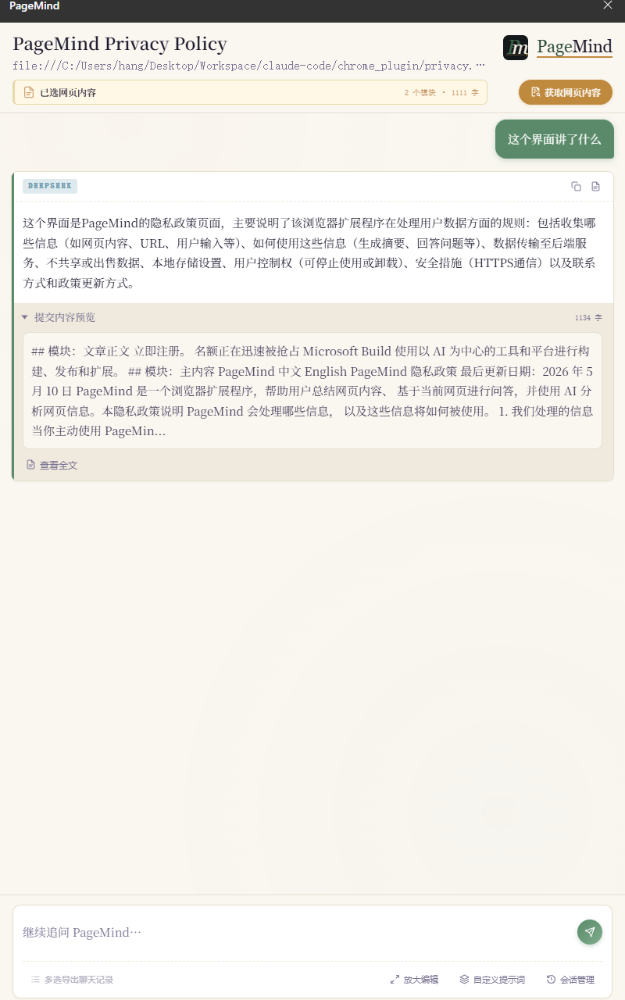
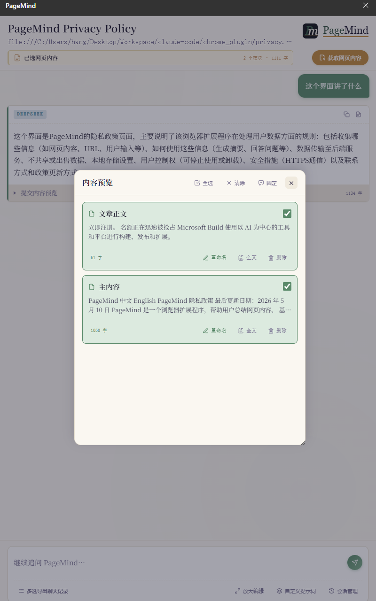
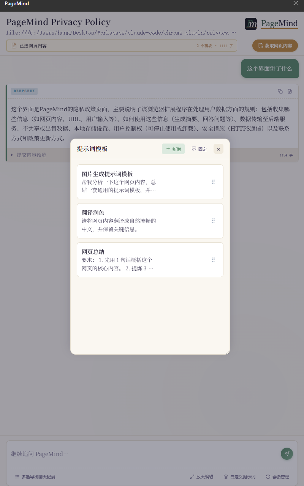
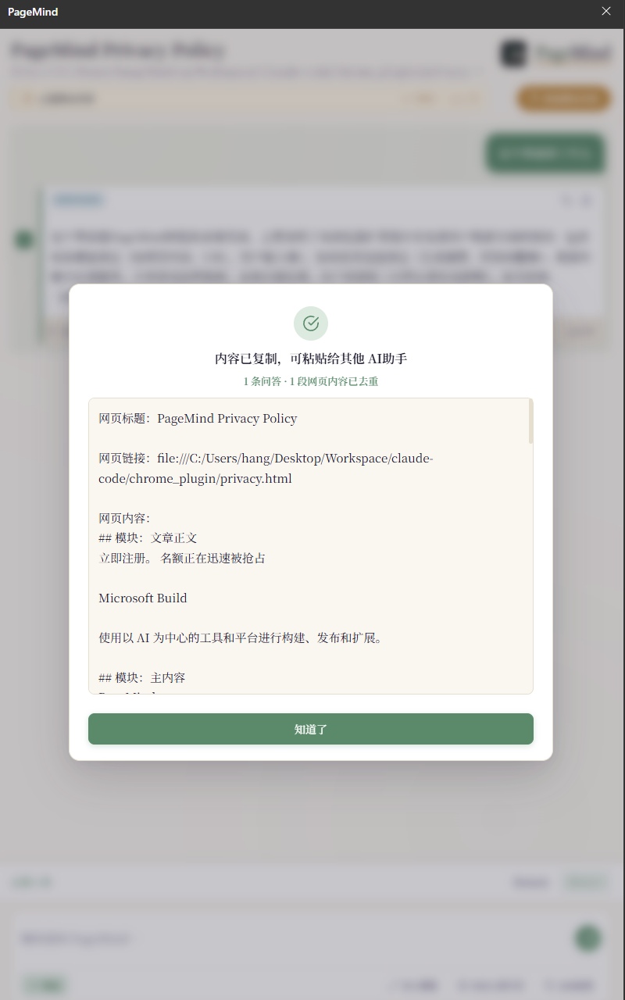
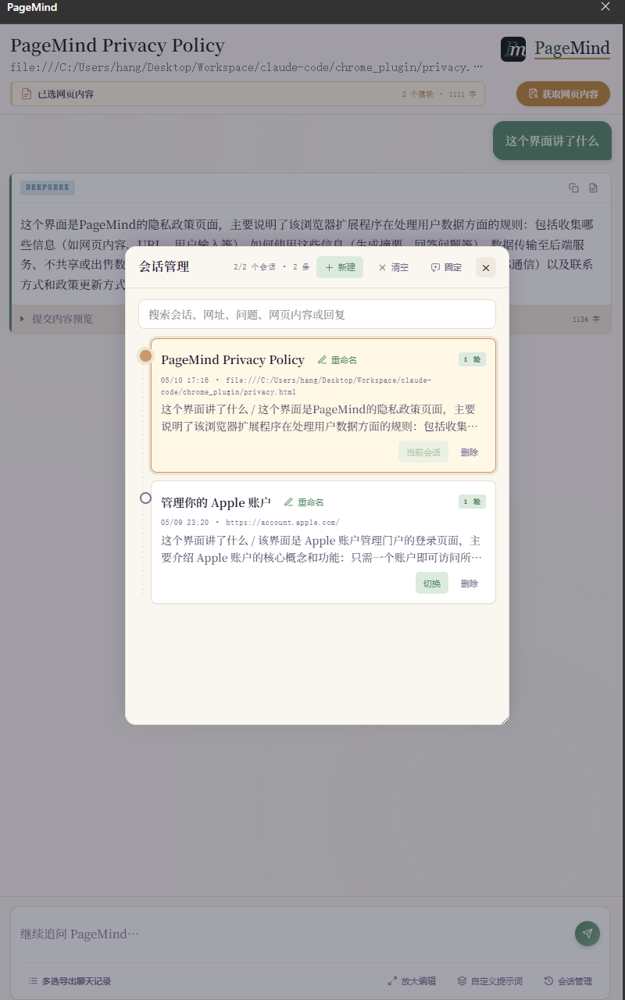

右侧快速提问
遇到简单问题时，直接在右侧输入问题即可获得初步理解，适合快速读懂概念、观点、步骤和页面重点。
Chrome 网页 AI 助手
PageMind 的设计初心是减少来回切换页面的时间。以前需要复制网页内容、打开其他 AI 窗口、再粘贴提问；现在可以直接在浏览器右侧完成网页收集、提问、初步理解和结果导出。

你可以在右侧侧边栏中完成网页阅读辅助，不用在多个页面、多个 AI 对话窗口之间来回复制粘贴。
遇到简单问题时，直接在右侧输入问题即可获得初步理解，适合快速读懂概念、观点、步骤和页面重点。
可以保存多个网页内容，让 AI 基于你收集的多个页面一起回复，适合对比资料、整理信息和做初步研究。
模型不会默认记住之前的上下文，只基于你提供的网页内容和本次提问回答，避免无关历史影响结果质量。
需要深度探索时，可以一键导出完整对话记录，包括网页内容、你的提问和模型的初步回复。
日常使用时，可以按“收集内容、选择范围、提出问题、保存结果”的顺序完成一次网页分析。
浏览网页时，把需要参考的页面内容保存到内容管理中。后续提问时，AI 会围绕你选中的网页内容进行回复。
在网页内容管理中保留真正相关的模块，去掉导航、广告、评论或其他干扰信息。内容越干净，回答越聚焦。
每次提问都按独立任务处理。即使你前后问的是完全不相干的问题，也不会被上一轮对话上下文牵着走。
如果回答值得继续深挖，可以导出网页内容、提问和模型回复，作为后续整理、复盘或继续分析的材料。
下面几张界面图对应 PageMind 的主要使用区域。当前公测版本暂不提供截屏分析功能。




PageMind 更适合处理明确的阅读任务。它不会把历史对话自动塞进下一次问题中，而是优先尊重你本次选择的网页内容。